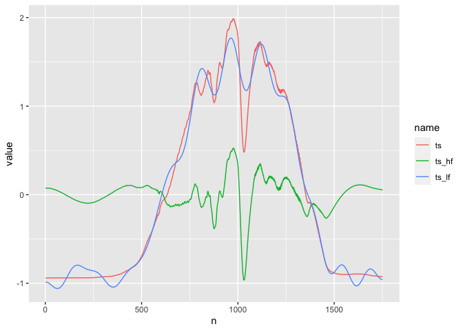

The goal of tsrecipes is to provide steps for the recipes package and tidymodels framework for preprocessing time series into features for machine learning.
This package is modeled after the textrecipes: both packages transform a sequence of data (words vs. time series).
In addition to the unique addition of the discrete cosine transform, tsrecipes also provides recipe steps for transformations found in the feasts R package.
And features from the Python package tsfresh, although at the moment it contains many more transformations.
tsrecipes supports three categories of time series feature engineering:
- time series transformations
- time series clustering
- time series feature extraction
The goal of time series preprocessing is to support unsuperived and supervised machine learning. Either time series classification, where you want to predict the label associated with a time series (or set of time series).
This also supports generalized feature enigneering for machine learning models. Features into machine learning are often implicitly aggregated over a period of time. For example, maybe a feature is the number of hours watched in a month, or total time spent visiting a website. But you can lose a lot of information by only considering the aggregate total. Treating features as a time series may increase the predictive power of the model.
Installation
You can install tsrecipes with:
# install.packages("devtools") devtools::install_github("tmastny/tsrecipes")
Time series preprocessing
You want to apply time series preprocessing when you have a set of related time series:

Each entry of the set may belong to a class or label. The entries may also be multivariate time series.
In general, it’s not feasible or recommended to use the raw time series values as classification or clustering features.
Why do we need time series preprocessing in the first place? You could each entry of the time series a feature:
#> # A tibble: 965 x 6
#> class `1` `2` `3` `4` `5`
#> <fct> <dbl> <dbl> <dbl> <dbl> <dbl>
#> 1 no_increase -4.15 -0.770 2.01 -2.69 2.04
#> 2 no_increase -0.749 0.943 -0.187 0.375 -0.933
#> 3 no_increase 4.93 1.06 0.774 -0.264 0.301
#> 4 no_increase 1.15 -0.0380 0.975 -0.615 -0.189
#> 5 no_increase 3.08 -0.660 0.166 1.69 -2.19
#> 6 no_increase 1.59 -0.419 -0.511 1.29 -0.247
#> 7 no_increase -0.824 2.84 -1.03 -0.683 0.209
#> 8 no_increase 0.0330 0.0659 -1.12 1.97 -0.588
#> 9 no_increase -1.24 -1.30 3.84 1.01 0.363
#> 10 no_increase 0.252 3.30 -8.63 -1.53 1.71
#> # … with 955 more rowsRaw time series make poor features, since they are typically high dimensional. And even if you have a model that handles high dimensional data, the important information of the time series might be the overall trend or seasonality: not the raw value of any particular day (see autocorrelation).
Then the goal of preprocessing is to find qualities of the time series that are actually important, and to reduce the dimension of the features.
Transformations
Transformations are all about changing the time series to an alternative representative. Think of it like the binary representation of a number:
29 <-> 11101
The number is the same either way and the process is entirely reversible. But yet each representation has it’s own unique properties.
For time series, the fast Fourier transform and the discrete cosine transform are the most important. They provide
- uncorrelated features
- unsupervised dimensionality reduction

References
Sayood, K. (2006). Introduction to data compression.
Primer on DCT: https://squidarth.com/rc/math/2018/06/24/fourier.html